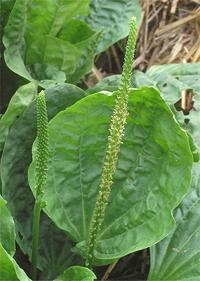
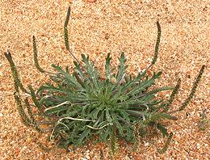
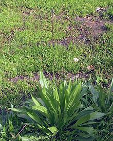
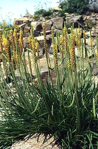
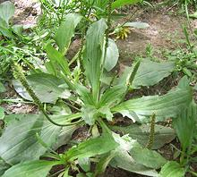
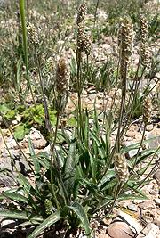
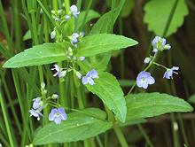
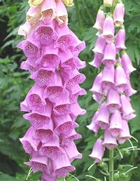

SAFARI
Users
Plantains
[Genus Plantago] - These weedy plants are found just about everywhere in the temperate to arctic zones of both north and south hemispheres. European varieties spread so rapidly through North America, it is reported that American Indians called them "White Man's Footprint". While only a few are used as food items, many have extensive medicinal uses. Also, the seed husks of several species, called psyllium, are a major ingredient in laxatives and dietary fiber products.
Broadleaf Plantain [Common Plantain; Plantago major | also Hoary Plantain; Plantago media]
Native to Europe and Central Asia, but naturalized in in much of the
world, this plantain is the one most used for food. Young leaves are
used in salads, green sauces and the like, older leaves are used in
stews. They are very nutritious, high in calcium and vitamins A, C and
K. The similar Hoary Plantain, native to Central and Western Europe,
is used in the same way. Photo of P. major
by Rasbak distributed under license Creative Commons
Attribution-Share Alike 3.0 Unported.
Buck's Horn Plantain [Minutina, Erba Stella; Plantago coronopus]
Native mainly to coastal regions of Europe, Central Asia and parts of
North Africa, this plantain is now also found in North America,
New Zealand and Australia as an introduced species. This plant is
grown commercially on a small scale as a salad herb. In some northern
regions it has recently become a popular winter crop, grown in
unheated plastic tunnels.
Photo by Patrice78500 contributed to the Public Domain.
.
Ribwort Plantain [Narrowleaf plantain,English plantain, Ribleaf, Lamb's tongue; Plantago lanceolata] This Plantain is native to temperate regions of Eurasia, but has
been introdued to Australia and North America, where it is very
widespread. The leaves are long and strongly ribbed, with three to 5
longitudinal ribs. The flower stalks are long and generally straight
up. It is often used in herbal teas and herbal medicinals,
particularly effective for cough. The photo specimen was found in
Los Angeles, California (La Crescenta).
Sea Plantain [Goose Tongue; Plantago maritima] This narrow leaf species is native to coastal regions in arctic to temperate zones of Europe and Central Asia, and also in North and South America. The leaves are up to 8-1/2 inches long, less than 1/2 inch wide and are less fibrous than most plantain leaves. This species is found as far south as Ventura County in Southern California, though it is much more common to the north. This is one of the best tasting and most edible of the plantains,
eaten particularly in the Maritime provinces of Eastern Canada and in
Alaska, where it is often canned for use in the winter. I suspect it
is also eaten in Finland and Siberia.
Photo by Ghislain118 distributed under license Creative
Commons
Attribution-Share Alike 3.0 Unported.
Asian Plantain [Chinese Plantain; Obako (Japan); Chi Qian Zi; (China); Plantago asiatica]
This perennial Plantain is native to China, Korea and Japan,
preferring disturbed areas. It is a common culinary herb in Japan,
often used in soups. The flavor is slightly bitter, and the leaves
can be fibrous if not quite young. It also is used medicinally for
a broad variety of complaints.
Photo by Shizhao distributed under license Creative
Commons
Attribution-Share Alike 3.0 Unported.
Psyllium [Blonde Psyllium, White Man's Footprint; Isabgol (India); Plantago ovata | Dark Psyllium, French Psyllium; Plantago psyllium] P. ovata is native to Southern and Western Asia, and is an introduced species in the western United States, now naturalized. It got the name "White Man's Footprint" because it started sprouting up everywhere European settlers went. P. ovata is an annual, producing a basal rosette and sending up flower spikes up to 18 inches high. These plants are grown commercially in Europe, India and parts of the former Soviet Union, with India by far the largest producer. P. ovata is the dominant commercial species. Psyllium seed husks are very high in mucilage, making them a major source of dietary fiber. This substance is used to promote regularity, control diarrhea, and is an effective treatment against mild high cholesterol. Psyllium must be take with adequate water as it is highly absorbent. The mucilage has many other usages, including thickening ice
cream and other products. It has over 6 times the thickening power
of starch. It is also used in newly planted soil to improve water
retention. The seed left from milling the husk is used as chicken
and cattle feed.
Photo of P. ovata by Stan Shebs distributed
under license Creative Commons
Attribution-Share Alike 3.0 Unported, Attribution Required.
|
Veronica
 [American Brooklime, American Speedwell; Veronica americana]
Native to temperate and arctic North America and Asia, this plant
grows near streams and in moist bottomlands. It is edible and
nutritious, tasting somewhat like watercress. It is also medicinal,
used mainly for bronchial congestion. It is sometimes confused with
members of the mint family, but its stems are round, while mints
have square stems.
Photo by Rob Routledge distributed under license
Creative Commons
Attribution-Share Alike 3.0 Unported.
Ngo Om
 [Ngo Om, Ba Om, Rau Om (Viet); Phak Kayang (Thailand); Tian Xiang Cao,
Zi Su Cao (China); Soyop-pul (Korea); Shiso-kusa (Japan);
Limnophila aromatica]
[Ngo Om, Ba Om, Rau Om (Viet); Phak Kayang (Thailand); Tian Xiang Cao,
Zi Su Cao (China); Soyop-pul (Korea); Shiso-kusa (Japan);
Limnophila aromatica]
This aquatic herb is native throughout Southeast Asia, extending into
southern China, Japan and Australia. After the Vietnam war, it was
brought to North America by refugees, and is now easily available in
the Asian markets here in Southern California. This plant grows well
in still water, such as found in rice paddies. It's particularly popular
in Vietnam, but is also used in China and Japan. In Chinese, Japanese
and Korean, the name of this herb is the same as for
Perilla, a very distantly related herb. It
is made specific with a suffix meaning green leafy plant (see names
above).
Details and Cooking.
Foxglove
 [Digitalis purpurea]
DON'T EAT THIS! - It'll stop your heart - dead - and meanwhile
the other symptoms aren't particularly pleasant. It is one of
the most powerful medicinal herbs in the world - all parts of the
plant contain cardiac glycoside digitoxin.
Photo by Jensflorian distributed under license
Creative Commons
Attribution-Share Alike 3.0 Unported.